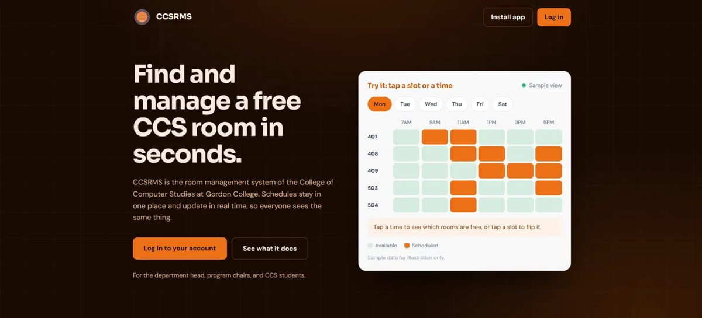

CCSRMS, the featured project
A real-time room scheduling system for the College of Computer Studies at Gordon College, built by a team of three for Software Engineering 1. I was the requirements and documentation lead.
Read the full case studyLive siteSource code
Reflectly
A web app where team members send honest, anonymous feedback to their peers, to reduce fear of conflict and social pressure.
Live site | Source code
Leadership
SPECS, Executive Vice President (incoming 2026 to 2027), VP for External Affairs (2025 to 2026), Junior Executive Committee Member (2024 to 2025).
Events
Event Judge for the Line Follow competition at the 8th Olongapo City Robotics Cup, and Technical Volunteer at the TECH TALK seminar, both in March 2026.
Experience
Technical support and shop assistant at a family computer shop (2018 to 2021). Freelance accounting assistant and data encoder, part-time (2022 to 2023).
Certifications
HTML, CSS, Python 1 and 2 Essentials from CISCO Networking Academy. Division-level Basic Encoding Competition winner, DepEd.